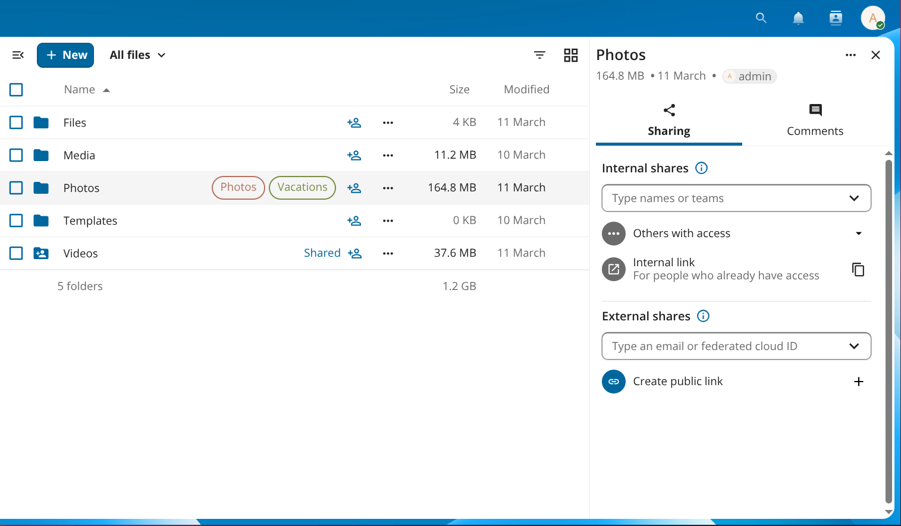
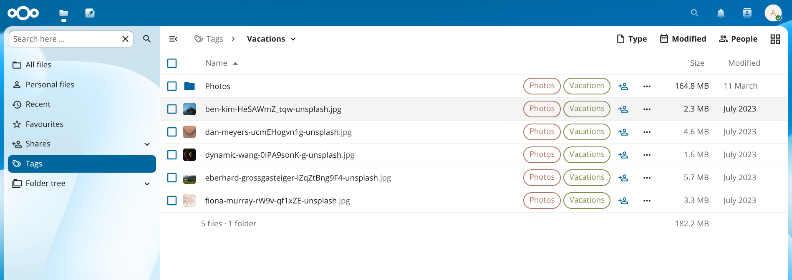
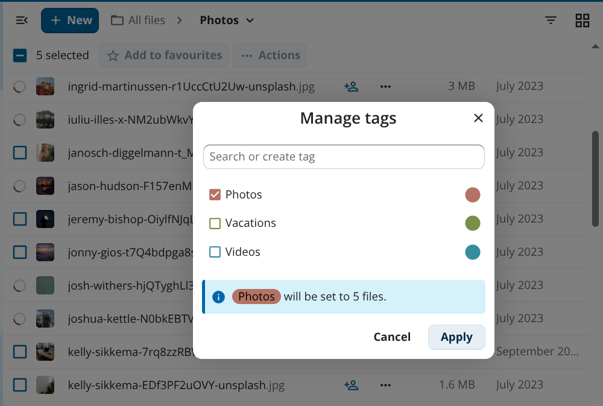

System tags
System tags are server-wide labels you can attach to files and folders to organise them, filter your file list, and drive automated workflows such as retention rules and access control.
Tags appear directly on file and folder rows in the Files app so you can see at a glance which labels are assigned:

Figure 1: Tags are shown inline on files and folders.
Tags are created by administrators in the server settings. Depending on your server configuration, regular users may also be able to create tags — your administrator can restrict tag creation to admins only.
Tag access levels
Every tag has one of three access levels that control what regular users can see and do:
Level |
Visible to users |
Users can assign / remove |
|---|---|---|
Public |
Yes |
Yes |
Restricted |
Yes |
No |
Invisible |
No |
No |
Restricted and invisible tags are used by administrators for automated workflows. You cannot work around them by removing the tag yourself.
Browsing files by tag
Click the navigation icon (≡) at the top left of the Files app to open the navigation panel, then click Tags. The view lists all tags visible to you. Click a tag name to see every file and folder that has that tag assigned.

Figure 2: Clicking a tag in the navigation panel filters the file list to files with that tag.
Assigning tags to files
You can assign or remove tags on one file at a time or across a selection of files in one step.
Single file
Click the three-dot action menu (…) next to a file or folder and select Details to open the details sidebar.
In the details sidebar, click Add tags.
Type a tag name in the search field and select the tag from the list.
Click outside the picker to close it. Changes are saved immediately.
To remove a tag, open the same picker and click the × next to the tag name.
참고
Only public tags appear in the picker for regular users. Restricted and invisible tags can only be assigned by administrators.
Multiple files
Select two or more files by clicking the checkbox to the left of each row.
Click ··· Actions in the toolbar above the file list, then select Manage tags.
Check or uncheck tags in the dialog that appears. An info line shows how the change will be applied across the selected files.
Click Apply.

Figure 3: Manage tags lets you apply or remove tags across multiple files at once.
Creating and managing tags
If your administrator has not restricted tag creation, you can create a new tag directly from the Manage tags dialog or the single-file tag picker: type a new name in the Search or create tag field and select the Create tag option that appears.
Administrators create, rename, and delete tags under Administration settings ‣ Server. For details on tag management and command-line tools, see the Automated tagging section of the administration manual.